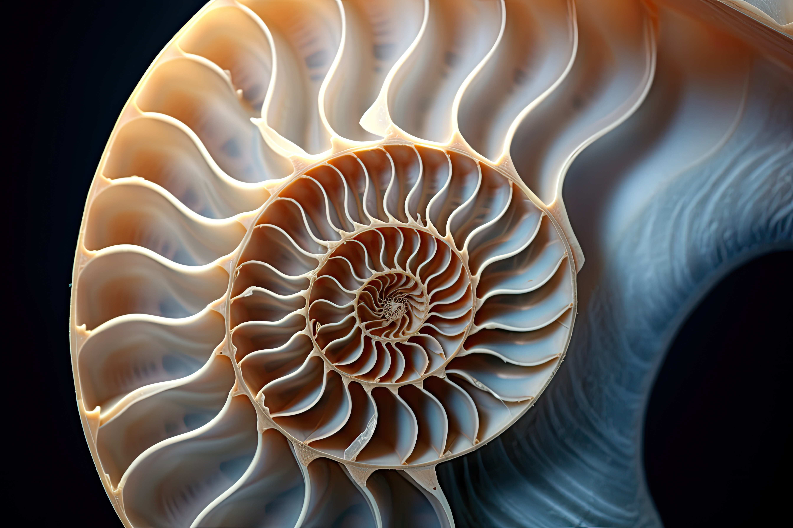

De la începuturi până în prezent

Istoria matematicii este o ramură fascinantă a studiului care urmărește evoluția conceptelor matematice de-a lungul timpului. De la numerele primitive folosite de civilizațiile antice până la teoriile avansate ale matematicienilor moderni, istoria matematicii ne oferă o privire de ansamblu asupra modului în care gândirea umană a evoluat și cum matematica a influențat dezvoltarea societății. Matematica a fost folosită în scopuri practice, cum ar fi măsurarea terenurilor și construirea structurilor, dar și în scopuri teoretice, cum ar fi studiul numerelor prime și al geometriei. De-a lungul istoriei, matematicienii au dezvoltat instrumente și tehnici care au revoluționat modul în care percepem lumea din jurul nostru.